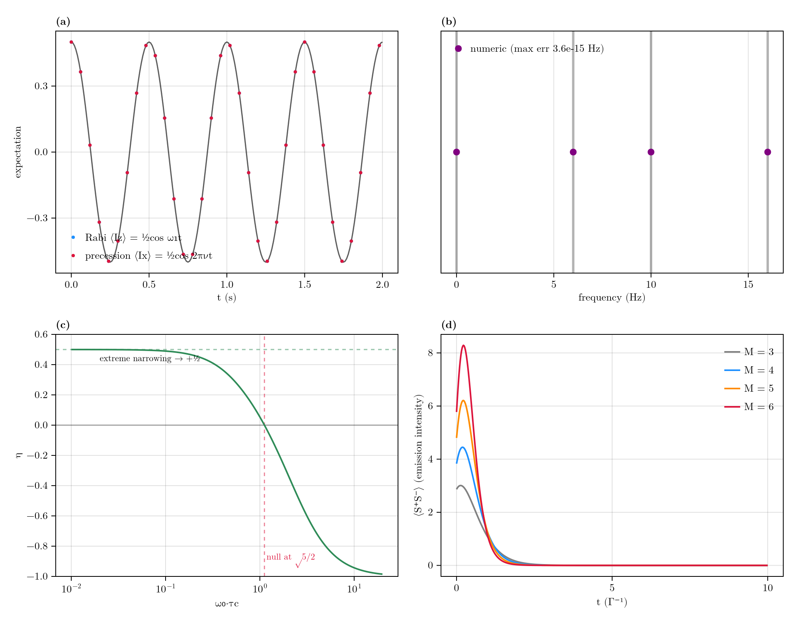
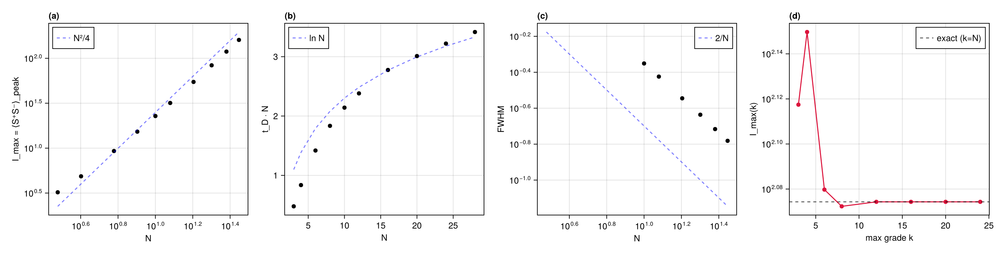
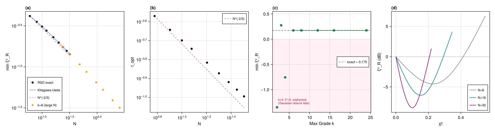
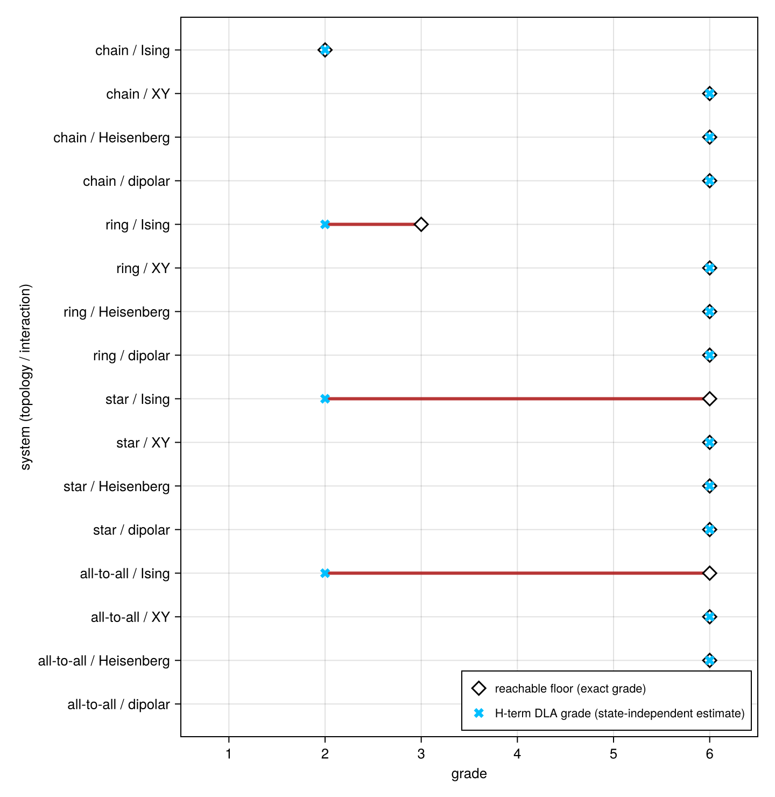
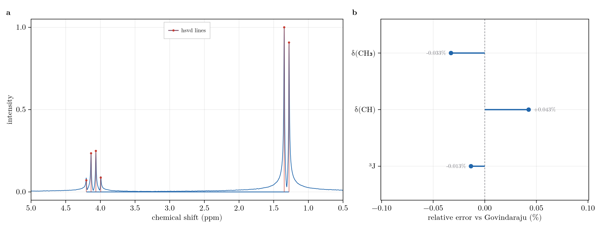

Validation
The restricted-basis method is an approximation that becomes exact when the dynamical Lie algebra closes at or below the retained grade. Each check below compares against an analytic or exact reference, full diagonalization where the dense operator still fits, and is gated in the unit-test suite (test/). Performance is in Benchmarks.
Validation Summary
| System | Reference | Result |
|---|---|---|
| AA'X coherent + dissipative (3-spin) | exact 8x8 diagonalization | full-grade SSR matches to < 1e-9 (the core assembly gate) |
| Higher-spin dynamics (spin-1, spin-3/2) | exact d^N Lindblad superoperator | full-grade tensor-restricted equals exact to machine precision |
| Permutation-symmetric sector | full-basis propagation | identical to 2e-16 |
| Single spin (Rabi + free precession) | analytic nutation and precession | on the analytic curve |
| AB strong coupling | analytic stick spectrum 1/2(nuA+nuB) +- 1/2 R +- 1/2 J | transitions reproduced exactly |
| Homonuclear NOE (Solomon) | eta = sigma/rho, max +1/2, null at w0*tauc = sqrt(5)/2 | on the Solomon curve |
| SABRE buildup | dense Barskiy Eq. (72) two-compartment | reproduced at full grade (transfer needs grade >= 3) |
| Two-site chemical exchange | classical Bloch-McConnell lineshape | SLE engine reproduces the coalescence series to 1e-14 |
| 2D NOESY pulse program (strychnine) | Solomon exp(-R*tmix) transfer | full noesygpph sequence transfer matches to 6.9e-4 |
| Landau-Zener transfer | adiabatic-following limit | adiabatic sweep transfers, diabatic does not |
| Dicke superradiant burst | Gross-Haroche I_max ~ N^2, t_D ~ ln(N)/N, FWHM ~ 1/N | scaling exponents reproduced |
| One-axis-twisting squeezing | Kitagawa-Ueda min xi^2_R ~ N^(-2/3) | matches the analytic xi^2 to 8.5e-7 |
| Grade-truncation exactness floor | reachable-set grade = exactness grade | empirical equals predicted across the model family |
System ID gradient (Inference.fit) | central FD of the summed objective | exact adjoint structural gradient matches to 1e-6 |
Cramer-Rao uncertainty (Inference.uncertainty) | 400-trial Monte-Carlo refit; exact Fisher Jacobian | refit scatter tracks the CRB to within ~10%; CRB exactly linear in sigma; Jacobian gated to 1e-3 vs Fréchet |
| Separable (VARPRO) fit | synthetic 2-component FID | frequencies, rates, and amplitude ratio recovered |
Line estimation (Inference.hsvd) | closed-form AB quartet + Govindaraju (2000) lactate delta/J | lines recovered seed-free to the analytic and published values (< 0.05 Hz, < 0.002 ppm) |
Moving-horizon estimation (Inference.smooth) | incomplete-measurement state recovery | beats snapshot tomography, near-exact when the window is complete |
Leggett-Garg (Inference.leggett_garg) | analytic K3(wt) = 2cos(wt) - cos(2wt) | matches at four wt to 1e-5; K3 = 3/2 at wt = pi/3, decoherence drives K3 <= 1 |
Exact Reductions Against Full Diagonalization
The method's central claim is that its reductions are lossless. Three gates establish this against the full reference, each at the largest size where the dense reference still fits.
- The core gate. On the three-spin AA'X system (weak and strong coupling together) the full-grade restricted Liouvillian reproduces the exact
8x8diagonalization to< 1e-9in both the coherent spectrum and the dissipative steady state. This single gate certifies the whole assembly: basis, string algebra, Liouvillian, and propagator. - Higher spin. The tensor-restricted path packs
d^2 - 1letters per site; at full grade it equals the exactd^NLindblad dynamics to machine precision for spin-1 (d = 3) and spin-3/2 (d = 4). - Symmetry. A permutation-symmetric
SpinClassessector reproduces the full-basis dynamics of a collectively-pumped system to2e-16. The orbit-summed sector reproduces the full dynamics exactly; it is not a mean-field approximation.
Textbook Coherent and Relaxation Physics
Four canonical checks drawn directly onto their analytic references: single-spin Rabi nutation and free precession, the AB strong-coupling stick spectrum, the Solomon steady-state nuclear Overhauser curve, and the collective superradiant burst.

(a) Rabi nutation and free precession on the analytic curve. (b) The AB strong-coupling stick spectrum at the analytic frequencies. (c) The NOE enhancement eta vs w0*tauc, with its +1/2 maximum and sqrt(5)/2 null. (d) Superradiant bursts, peak growing and delay shortening with spin number.
In the NOE panel the steady-state enhancement eta = sigma/rho traces the full Solomon dependence on w0*tauc, hitting the extreme-narrowing maximum of +1/2 and the characteristic null at w0*tauc = sqrt(5)/2 where the cross-relaxation changes sign. The AB panel recovers the exact strong- coupling transition frequencies and the roofing intensities that distinguish an AB system from two singlets.
Collective Scaling Laws
Beyond fixed-size checks, the method reproduces the scaling of collective-spin phenomena, the regime where a full 4^N treatment is out of reach but the symmetric sector stays small.
Dicke Superradiance
A fully-inverted Dicke state decaying through a collective jump produces the Gross-Haroche superradiant burst. The peak intensity grows as N^2, the delay to the peak as ln(N)/N, and the burst narrows as 1/N; the restricted dynamics reproduce all three laws over the exactly-propagated range.

(a) Peak intensity tracking N^2/4 (log-log). (b) Peak delay times N tracking ln(N). (c) Burst width tracking 1/N. (d) Grade demand: intensity converges to the exact value as the retained grade grows.
The fourth panel shows the cost: the fully-inverted burst is a high-grade transient, so its peak intensity converges to the exact value only as the retained grade grows.
Spin Squeezing
One-axis twisting, H = chi * Sz^2 acting on a coherent spin state, is the canonical route to metrologically useful entanglement. The Wineland squeezing parameter follows the Kitagawa-Ueda law: its optimum deepens as N^(-2/3) and arrives at a time scaling as N^(-2/3).

(a) The minimum Wineland parameter following N^(-2/3), on the Kitagawa-Ueda curve. (b) The optimal squeezing time, N^(-2/3). (c) Grade demand. (d) The squeezing dip (dB) deepening with spin number.
Because the squeezing is built from collective second moments and the state stays permutation-symmetric, a fixed low grade reproduces the exact optimum across the whole range: the squeezing parameter matches the analytic xi^2 to 8.5e-7. The grade-demand panel also marks the floor below which a second-moment closure turns unphysical (xi^2 < 0): the useful squeezing lives above it.
Polarization Transfer
The transfer sequences that motivate the method reproduce their established references. SABRE buildup, run as coherent evolution plus relaxation plus chemical exchange, matches the dense Barskiy Eq. (72) two-compartment model at full grade; the singlet-to-substrate transfer needs grade >= 3 (its exactness floor), so a grade-2 free pool cannot carry it. A Landau-Zener field ramp through a J-coupled avoided crossing transfers polarization in the adiabatic limit and leaves it untouched in the diabatic one. This is the same level-anti-crossing mechanism behind low-field SABRE transfer, in its cleanest two-spin form.
The same sequence engine runs the full noesygpph 2D NOESY program on 22-spin strychnine (a 256 x 1024 phase-cycled acquisition with a z-filter and 400 ms of relaxation mixing) and stays stable and physical across the whole program. Its transfer is gated against the Solomon exp(-R*tmix) matrix on a subcluster to 6.9e-4; the worked spectrum is in Reachability, Control, and the Adaptive Basis.
The Exactness Floor
Every result above rests on one principle: grade-$k$ truncation is exact precisely when the strings the dynamics can populate all have grade $\le k$. That reachable-set floor is the exactness criterion, and the empirical grade at which the restricted dynamics first meet the full reference matches it for every member of the family below. The floor is set by the coupling topology (the largest connected cluster) rather than the spin count:
| Coupling geometry | Closing grade |
|---|---|
| Uncoupled spins | 1 |
| A J-coupled pair (AX / AB), other spins isolated | 2 |
| AA'X, three mutually coupled spins | 3 |
| A linear chain or ring of $N$ coupled spins | $N$ |
| $M$ disjoint $m$-spin clusters | $m$ |

One row per system (chain/ring/star/all-to-all x Ising/XY/Heisenberg/dipolar): the reachable floor (diamond, the exact grade) against the state-independent H-term DLA grade (cross), red where the bare-generator estimate undershoots the floor.
The cross is the cheap estimate from the Hamiltonian terms alone; the diamond is the exact floor, the largest grade the initial state reaches under the dynamics. The state reaches correlations the terms alone never do, so the diamond can sit to the right of the cross. Ising coupling makes the gap plain: the $ZZ$ terms close at grade 2 on every topology, but a single transverse excitation spreads to grade 2 at a chain end, 3 on a ring, and 6 at a star hub, where one spin couples to all the rest. Only the diamond certifies exactness, and the boundary block is assembled directly as the certificate:
d = dla_dimension(N, collect(keys(H))) # DLA size; compare to basis_size(N, kmax) for the saving
m = leakage_operator(N, kmax, H; jumps = jumps)
norm(leakage_block(m)) # 0 certifies exactness at this kmax; small values bound the errorBelow the closing grade, grade truncation becomes a convergence-controlled approximation; its rate is the subject of The Convergence Rate.
Line Estimation
The direct line estimator hsvd (Hankel-SVD / matrix pencil) recovers an FID's frequencies, decay rates, and amplitudes in one non-iterative pass, with no starting guess. Those lines seed a structural fit, whose time-domain least-squares cost is multimodal in the frequencies and would otherwise need a starting guess close to the solution.
The analytic reference is the two-spin AB quartet. The four recovered lines land on the closed-form positions $\pm C \pm \tfrac12 J$, where $2C = \sqrt{\Delta^2 + J^2}$; $\Delta$ and $J$ come back to within < 0.05 Hz, and the roofing intensity ratio matches $(2C-J)/(2C+J)$.
On a synthetic three-line FID, hsvd returns the frequencies and damping seed-free, with no peak-picking:
using RestrictedSpinDynamics.Inference
# ground truth: a noiseless FID built from three decaying complex exponentials
dt = 1e-3; nsamp = 2000
freqs = [120.0, 250.0, 410.0] # Hz
damping = [6.0, 9.0, 4.0] # decay rates 1/T2* (s^-1)
amps = [1.0, 0.6, 0.3]
fid = ComplexF64[sum(amps[k] * cis(2π*freqs[k]*dt*n) * exp(-damping[k]*dt*n) for k in 1:3) for n in 0:nsamp-1]
# hsvd sees only the samples and dt, not the line count, nor any of the values above.
# It infers the model order from the Hankel singular-value gap, then solves for the poles,
# so recovering the three freqs and rates below is a blind estimate, not a fitted readback.
l = hsvd(fid, dt)
(freqs = round.(sort(l.freqs); digits = 2), damping = round.(sort(l.damping); digits = 2))(freqs = [120.0, 250.0, 410.0], damping = [4.0, 6.0, 9.0])The published reference is lactate (an A3X system: a CH3 doublet and a CH quartet). Its chemical shifts and ${}^3J$ coupling were tabulated by Govindaraju, Young & Maudsley (NMR Biomed 13:129, 2000), the compilation from which the LCModel and related basis sets used to quantify every clinical ${}^1$H MRS spectrum are built, making it the field's ground-truth metabolite table, not an arbitrary target. From a simulated lactate FID, hsvd recovers $\delta(\mathrm{CH_3})$, $\delta(\mathrm{CH})$, and ${}^3J$ seed-free (no peak-picking, no starting guess) to within 0.002 ppm and 0.001 Hz of the tabulated values, under 0.05% relative error on each. Recovering the reference parameters this tightly, without supervision, is what licenses using hsvd as the front end that seeds a coupled-spin fit.

(a) The simulated lactate spectrum with the hsvd-recovered lines as sticks (methyl doublet ~1.3 ppm, methine quartet ~4.1 ppm). (b) The signed relative error of each recovered quantity (delta(CH3), delta(CH), 3J) against the Govindaraju reference, all within 0.05%.
Reproducing
julia --project=scripts scripts/validation/validate_physics.jl # -> scripts/validate_physics.png
julia --project=scripts scripts/experiments/dicke_scaling.jl # -> data/dicke_scaling.csv
julia --project=scripts scripts/experiments/spin_squeezing_oat.jl # -> data/spin_squeezing_oat.csv
julia --project=scripts scripts/analysis/dla_exactness_map.jl # -> data/dla_exactness_map.csv
julia --project scripts/validation/validate_crb.jl # CRB efficiency: MC refit std == CRB
julia --project scripts/validation/validate_two_compartment.jl # SABRE == Barskiy Eq. (72)
julia --project scripts/validation/validate_higher_spin.jl # higher-spin exactness gate
julia --project scripts/validation/validate_weak_symmetry.jl # symmetric sector == full basisThe AA'X core gate and the higher-spin and symmetry exactness checks run as part of the unit-test suite (julia --project -e 'using Pkg; Pkg.test()').